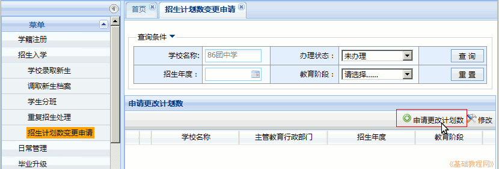
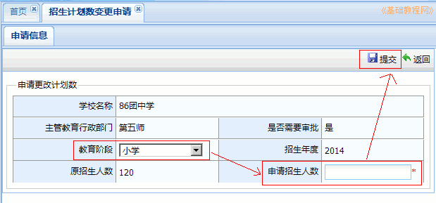
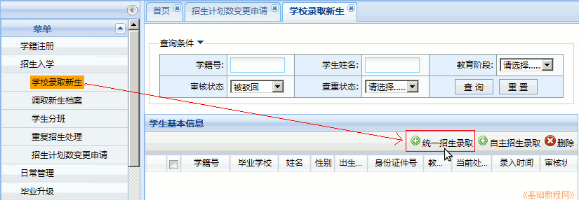
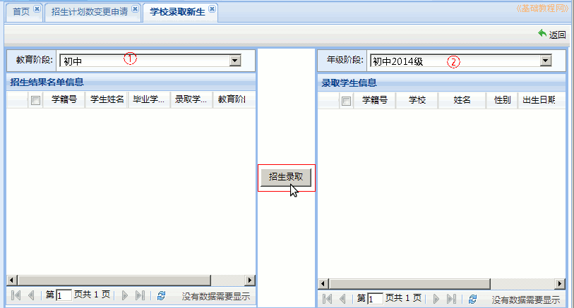
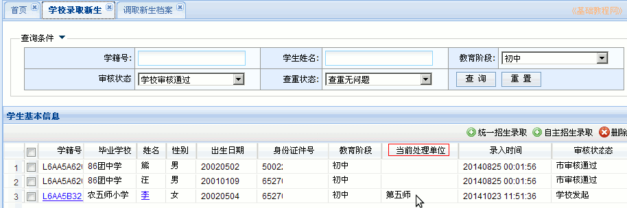
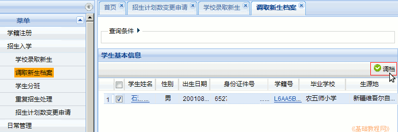

全国中小学生学籍管理系统操作指南
作者：TeliuTe 来源：基础教程网
四、学校录取新生 返回目录 下一课每年开学初要录取七年级新生或者高中录取新生；
1、学校录取新生
1）点右上角“学籍管理”按钮，再在左侧栏点“招生入学－招生几乎是变更申请－申请更改计划数”；

2）选择教育阶段，小学或初中，再在“申请招生人数”中输入人数，可以比实际多一些，以方便后面补招，等待上一级主管审核通过；

3）再在左侧栏点“学校录取新生－统一招生录取”，提前要将录取模板发给上一级主管导入，模板在“综合查询－毕业生查询”里导出：http://teliute.org/mix/Texj/lesson23/lesson23.html

4）在出来的面板中，依次选择教育阶段，年级阶段，在左侧面板中选中要录取的学生，点击中间的“招生录取”按钮即可；

5）录取后的学生会自动进行查重，等待上一级主管审核通过，在“学校录取新生”中可以查看，蓝色表示还未调取档案；

6）上级审核通过后，点左侧栏“调取新生档案”，在右边的面板中，选择全部学生，点右上角的绿色“调档”按钮；

本节学习了的学校录取新生基础知识，如果你成功地完成了练习，请继续学习下一课内容；
本教程由TeliuTe制作|著作权所有
基础教程网：http://teliute.org/
美丽的校园……
转载和引用本站内容，请保留作者和本站链接。